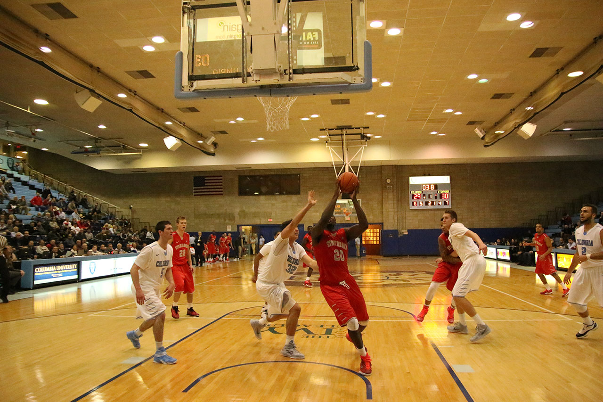

My love for reporting began when I became a staff writer at my college newspaper, The John Jay Sentinel. Later, as managing editor, I assisted with the design and layout of the paper along with editing stories, and writing my own content. I graduated in 2013 with a degree in English and a minor in journalism.
I went on to the CUNY Graduate School of Journalism, where I honed my reporting, writing, and technological skills, gaining experience in audio, video, and interactive storytelling. I covered two beats. One was the community of Flushing in Queens, New York. The other was my true passion: the science and health of sports.
I covered the dangers of weight cutting in mixed martial arts, 3-D vision technology for athletic training and high-tech helmets that can potentially reduce concussions in high school football players. I received my master’s degree in journalism in December of 2015.
The Stony Brook Seawolves and The Columbia Lions men's basketball team met again this season on Jan. 6. Their first game was the season opener at Stony Brook, where the Seawolves beat the Lions by one point, ending the game with 57-56. A video montage can be seen here on my YouTube page, Satiated Media.

Columbia attempted to seek revenge at home, but was thwarted. Their leading scorer, Maodo Lo, SG, could not get free of Stony Brook's defense. While Stony Brook's star player, Jameel Warney, PF, could not be stopped.
The Seawolves beat the Lions with a final score of 70-61. Lo had a season low score of seven points. Warney had 25 points and increased his double-double statistics to 13.
Weight cutting, or the act of losing weight to gain an athletic advantage, is a staple in the combat sports community. From wrestling to mixed martial arts, athletes cut weight before each fight. However, the cut can come with it’s own dangers. This video explains what exactly happens to the body during a weight cut through the eyes of two amateur MMA fighters, and athletic trainer, and an athletic doctor.
The video is located on my YouTube page, Satiated Media.
Fuller is a Painting Major at Hofstra University. I shot and edited this profile piece on him. His work has earned him awards from the school and has earned him commissions outside of school.
The video is located on my YouTube page, Satiated Media.
Date: October 2014
Resume
Desiree Mathurin
206 Skidmore Road | North Babylon, NY
646.633.2279 | desiree.mathurin@journalism.cuny.edu
EDUCATION
CUNY Graduate School of Journalism, New York, NY
M.A. Journalism; health and science concentration; Dec. 2015
John Jay College, New York, NY
B.A. English; Minored in Journalism; Feb 2013
EXPERENCE
The Pittsburgh Post-Gazette May 2015 – Aug. 2015
Sports Reporter/Copy Intern
Wrote news follows, features and profiles on sports topics, such as boxing, mixed martial arts, and sports technology. Edited stories for length, AP and Post-Gazette style. Created headlines. Posted stories to the Post-Gazette homepage and edited SEO keys.
New York City News Service Aug. 2014 – Dec. 2015
Student Journalist
Covered sports medicine, psychology and technology. Stories include: video feature on cutting weight practices among amateur mixed martial artists; feature on concussion sensor equipment in high schools; and an audio slideshow of a college basketball game.
The John Jay Sentinel Feb. 2010 – May, 2012
Managing Editor
Worked with a team of editors to restart the student newspaper. Started the online version of the paper. Wrote features, profiles and news follows.
SKILLS
Software/Platforms: Adobe InDesign, Photoshop, Bridge, Premiere, Final Cut Pro X, ProTools, HTML and CSS, JavaScript and jQuery, GitHub, WordPress
Use this area of the page to describe your project. The icon above is part of a free icon set by Flat Icons. On their website, you can download their free set with 16 icons, or you can purchase the entire set with 146 icons for only $12!